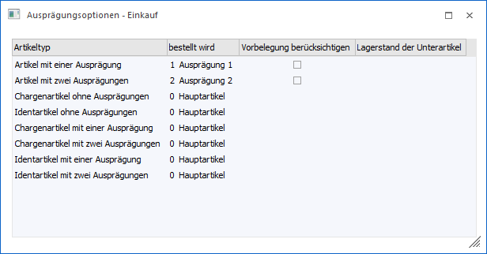
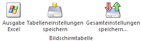
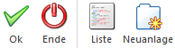

In dem Menüpunkt…
1 WinLine FAKT
1 Einkauf
1 Bestellvorschlag erstellen
1 Ausprägungsoptionen - Einkauf
… kann definiert werden, wie Ausprägungsartikel im Menüpunkt "Bestellvorschlag erstellen" behandelt - sprich bestellt - werden sollen.

Folgende Einstellungen können in der Tabelle vorgenommen werden.
Ø Artikeltyp / bestellt wird
Je nach Artikeltyp kann folgendes definiert werden:
ü Artikel mit einer Ausprägung
Es
kann wahlweise der Hauptartikel oder die Ausprägung bestellt werden.
Standardmäßig ist die Einstellung mit "1 - Ausprägung 1" vorbelegt.
ü Artikel mit zwei
Ausprägungen
Es kann wahlweise der Hauptartikel, Artikel mit einer Ausprägung
("Zwischenartikel") oder Artikel mit 2 Ausprägungen bestellt werden.
Standardmäßig ist die Einstellung auf "2 - Ausprägung 2" gestellt.
ü Artikel mit Chargen,- oder
Identnummern (ohne Ausprägungen)
Es kann wahlweise der Hauptartikel oder der
Chargen- bzw. der Identnummernartikel bestellt werden. Standardmäßig ist die
Einstellung auf "0 - Hauptartikel" gestellt.
ü Artikel mit einer Ausprägung und
Chargen-/Identnummer
Wahlweise kann der Hauptartikel, ein Artikel mit einer
Ausprägung ("Zwischenartikel") oder der Chargen- bzw. Identnummernartikel
bestellt werden. Standardmäßig ist die Einstellung auf "0 - Hauptartikel"
gestellt.
ü Artikel mit 2 Ausprägungen und
Chargen-/Identnummer
Es kann wahlweise der Hauptartikel, ein Artikel mit
einer Ausprägung ("Zwischenartikel"), ein Artikel mit beiden Ausprägungen
("Zwischenartikel") oder der Chargen- bzw. Identnummernartikel bestellt werden.
Standardmäßig ist die Einstellung "0 - Hauptartikel" gesetzt.
Ø Vorbelegung berücksichtigen
Sobald in der Spalte "bestellt wird" die Einstellung "1 - Ausprägung 1" oder "2 - Ausprägung 2" getroffen wurde, so steht diese Checkbox-Option zur Verfügung.
Wenn die Checkbox aktiviert ist, so wird die Vorbelegung der Ausprägungen aus der Belegart (bzw. der Belegart aus dem FAKT-Stamm des jeweiligen Kreditorenkontos) für den Bestellvorschlag berücksichtigt. D.h. es wird die hinterlegte Ausprägung für die Bestellung vorgeschlagen anstatt der Ausprägung, wo der tatsächliche Bedarf entstanden ist.
Ø Lagerstand der Unterartikel
Sobald in der Spalte "bestellt wird" ein Zwischenartikel ausgewählt wird, kann an dieser Stelle definiert werden, wie die Berechnung der Bestellmenge vorgenommen werden soll. Hierbei stehen folgende Möglichkeiten zur Verfügung:
ü 1 - nicht berücksichtigen
Mit
dieser Einstellung wird nur der Lagerstand des Zwischenartikels und seine
zugehörigen offenen Bestellungen / Aufträge für die Berechnung der Bestellmenge
verwendet.
ü 2 - berücksichtigen
Mit der
Einstellung "2 - berücksichtigen" wird der Lagerstand und die offenen
Bestellungen / Aufträge des Zwischenartikels und aller seiner Unterartikel für
die Berechnung der Bestellmenge verwendet.
Beispiel
Bei dem Artikel "10022" handelt es sich um einen Identartikel mit 2 Ausprägungen. Unter Verwendung der "bestellt wird"-Einstellung "1 - Ausprägung 1" müsste z.B. der Artikel "10022,M" bestellt werden.
Für die Berechnung der Bestellmenge, bei Verwendung der Einstellung "2 - berücksichtigen", werden Lagerstand, Bestellungen und Aufträge des Artikels berücksichtigt.
ü 10022,M,ROT (Zwischenartikel)
ü 10022,M,ROT,0001 (Identnummer S1232)
ü 10022,M,ROT,0002 (Identnummer S1233)
ü 10022,M,BLAU (Zwischenartikel)
ü 10022,M,BLAU,0003 (Identnummer FX1215)
ü 10022,M,BLAU,0004 (Identnummer FX1216)
Hinweis
Wurde die Option "Zwischenartikel immer mit der Summe ihrer Ausprägungen aktualisieren" (FAKT-Parameter) aktiviert, so beinhaltet die Summe der Zwischenartikel automatisch die Mengen der darunterliegenden Ebenen. Aus diesem Grund steht in solch einem Fall die Spalte "Lagerstand der Unterartikel" nicht zur Verfügung.
Tabellenbuttons

Ø Ausgabe Excel
Durch Anwahl des Buttons "Ausgabe Excel" wird der Inhalt der Tabelle nach Microsoft Excel übergeben.
Ø Tabelleneinstellungen speichern
Die Spalten einer Tabelle können grundsätzlich an beliebige Positionen verschoben, bzw. in der Breite entsprechend angepasst werden. Durch Anwahl des Buttons "Tabelleneinstellungen speichern" werden die Einstellungen benutzerspezifisch gespeichert und bei dem nächsten Aufruf des Programmpunktes wieder vorgeschlagen.
Ø Gesamteinstellungen speichern
Im Gegensatz zu "Tabelleneinstellungen speichern" können mit "Gesamteinstellungen speichern" mehrere Tabellenaufbauten gespeichert und nach Wunsch geladen werden. Zusätzlich werden Sonderfunktionen der Tabelle (z.B. "Spalte gruppieren") ebenfalls bei der Speicherung bedacht.
Buttons

Ø Ok
Durch Drücken des Buttons "Ok" bzw. der Taste F5 werden die getätigten Einstellungen gespeichert.
Ø Ende
Mit dem Button "Ende" bzw. der Taste ESC wird der Menüpunkt geschlossen und alle nicht gespeicherten Eingaben verworfen.
Ø Liste
Durch Anwahl des Buttons "Liste" wird eine Liste mit den aktuellen Einstellungen am Bildschirm ausgegeben.
Hinweis
Neben den Einstellungen werden für jeden Artikeltyp jene Artikel aufgelistet, die bestellt werden sollen (und wo Unterartikel vorhanden sind), welche aber nicht angelegt sind.
Beispiel
Bei dem Artikel "10023" handelt es sich um einen Identartikel mit 2 Ausprägungen. Folgende Ausprägungen sind angelegt worden:
ü 10023,L,GE,0001 (Identnummer 4711)
ü 10023,L,GE,0002 (Identnummer 4712)
ü 10023,M (Zwischenartikel)
ü 10023,M,BLAU (Zwischenartikel)
ü 10023,M,BLAU,0003 (Identnummer 0815)
ü 10023,M,BLAU,0004 (Identnummer 0816)
Je nach getroffenen Einstellungen werden in der Liste folgende Informationen ausgegeben:
ü Ist als Einstellung "bestellt wird" der Hauptartikel gesetzt, werden keine "nicht angelegten Artikel" angezeigt.
ü Wird nach Ausprägung 1 bestellt, so wird Artikel "10023,L" angedruckt. Diese Ausprägung ist nicht angelegt und könnte daher nicht bestellt werden.
ü Wenn nach Ausprägung 2 bestellt wird, wird der Artikel 10023,L,GE angedruckt. Diese Ausprägung ist nicht angelegt und könnte daher nicht bestellt werden.
ü Wird nach Identnummern bestellt, werden keine "nicht angelegten Artikel" angedruckt.
Ø Neuanlage
Mit Hilfe des Buttons "Neuanlage" können die "nicht vorhandenen Artikel" angelegt werden. Hierfür wird das Programm "Ausprägungsanlage" geöffnet und alle Ausprägungen, die auch in der Liste als "nicht angelegte Artikel" angedruckt werden, in der Tabelle angezeigt. Durch einfaches Drücken des Buttons "Ok" bzw. der Taste F5 können die Artikel dort angelegt werden.